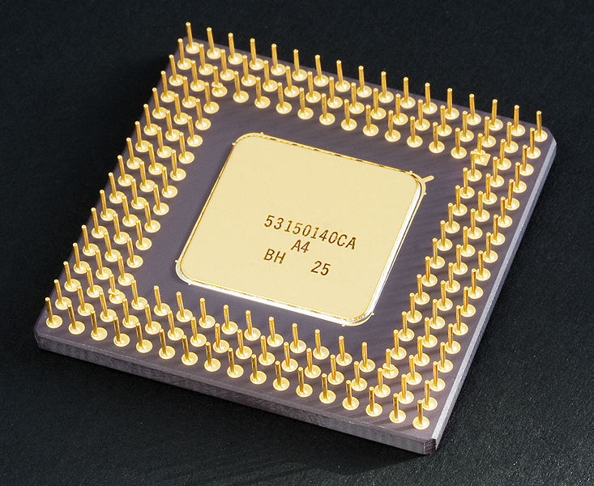
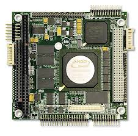

CPU~Central Processing Unit
Central Processing Unit(CPU) is the hardware within a computer that carries out the instructions of a computer program by performing the basic arithmetical, logical, and input/output operations of the system.The CPU is the brains of the computer where most calculations take place. In terms of computing power, the CPU is the most important element of a computer system.The term has been in use in the computer industry at least since the early 1960s.
Two typical components of a CPU are the arithmetic logic unit (ALU), which performs arithmetic and logical operations, and the control unit (CU), which extracts instructions from memory and decodes and executes them, calling on the ALU when necessary.
Operation
The fundamental operation of most CPUs, regardless of the physical form they take, is to execute a sequence of stored instructions called a program. The instructions are kept in some kind of computer memory. There are four steps that nearly all CPUs use in their operation: fetch, decode, execute, and writeback.
The first step, fetch, involves retrieving an instruction (which is represented by a number or sequence of numbers) from program memory. The location in program memory is determined by a program counter (PC), which stores a number that identifies the current position in the program. After an instruction is fetched, the PC is incremented by the length of the instruction word in terms of memory units.Often, the instruction to be fetched must be retrieved from relatively slow memory, causing the CPU to stall while waiting for the instruction to be returned. This issue is largely addressed in modern processors by caches and pipeline architectures.
The instruction that the CPU fetches from memory is used to determine what the CPU is to do. In the decode step, the instruction is broken up into parts that have significance to other portions of the CPU. The way in which the numerical instruction value is interpreted is defined by the CPU's instruction set architecture (ISA).[d] Often, one group of numbers in the instruction, called the opcode, indicates which operation to perform. The remaining parts of the number usually provide information required for that instruction, such as operands for an addition operation. Such operands may be given as a constant value (called an immediate value), or as a place to locate a value: a register or a memory address, as determined by some addressing mode. In older designs the portions of the CPU responsible for instruction decoding were unchangeable hardware devices. However, in more abstract and complicated CPUs and ISAs, a microprogram is often used to assist in translating instructions into various configuration signals for the CPU. This microprogram is sometimes rewritable so that it can be modified to change the way the CPU decodes instructions even after it has been manufactured.
After the fetch and decode steps, the execute step is performed. During this step, various portions of the CPU are connected so they can perform the desired operation. If, for instance, an addition operation was requested, the arithmetic logic unit (ALU) will be connected to a set of inputs and a set of outputs. The inputs provide the numbers to be added, and the outputs will contain the final sum. The ALU contains the circuitry to perform simple arithmetic and logical operations on the inputs (like addition and bitwise operations). If the addition operation produces a result too large for the CPU to handle, an arithmetic overflow flag in a flags register may also be set.
The final step, writeback, simply "writes back" the results of the execute step to some form of memory. Very often the results are written to some internal CPU register for quick access by subsequent instructions. In other cases results may be written to slower, but cheaper and larger, main memory. Some types of instructions manipulate the program counter rather than directly produce result data. These are generally called "jumps" and facilitate behavior like loops, conditional program execution (through the use of a conditional jump), and functions in programs.[e] Many instructions will also change the state of digits in a "flags" register. These flags can be used to influence how a program behaves, since they often indicate the outcome of various operations. For example, one type of "compare" instruction considers two values and sets a number in the flags register according to which one is greater. This flag could then be used by a later jump instruction to determine program flow.
After the execution of the instruction and writeback of the resulting data, the entire process repeats, with the next instruction cycle normally fetching the next-in-sequence instruction because of the incremented value in the program counter. If the completed instruction was a jump, the program counter will be modified to contain the address of the instruction that was jumped to, and program execution continues normally. In more complex CPUs than the one described here, multiple instructions can be fetched, decoded, and executed simultaneously. This section describes what is generally referred to as the "classic RISC pipeline", which in fact is quite common among the simple CPUs used in many electronic devices (often called microcontroller). It largely ignores the important role of CPU cache, and therefore the access stage of the pipeline.
Design and implementation
Hardwired into a CPU's design is a list of basic operations it can perform, called an instruction set. Such operations may include adding or subtracting two numbers, comparing numbers, or jumping to a different part of a program. Each of these basic operations is represented by a particular sequence of bits; this sequence is called the opcode for that particular operation. Sending a particular opcode to a CPU will cause it to perform the operation represented by that opcode. To execute an instruction in a computer program, the CPU uses the opcode for that instruction as well as its arguments (for instance the two numbers to be added, in the case of an addition operation). A computer program is therefore a sequence of instructions, with each instruction including an opcode and that operation's arguments.
The actual mathematical operation for each instruction is performed by a subunit of the CPU known as the arithmetic logic unit or ALU. In addition to using its ALU to perform operations, a CPU is also responsible for reading the next instruction from memory, reading data specified in arguments from memory, and writing results to memory.
In many CPU designs, an instruction set will clearly differentiate between operations that load data from memory, and those that perform math. In this case the data loaded from memory is stored in registers, and a mathematical operation takes no arguments but simply performs the math on the data in the registers and writes it to a new register, whose value a separate operation may then write to memory.
Control unitThe control unit of the CPU contains circuitry that uses electrical signals to direct the entire computer system to carry out stored program instructions. The control unit does not execute program instructions; rather, it directs other parts of the system to do so. The control unit must communicate with both the arithmetic/logic unit and memory.
Integer rangeThe way a CPU represents numbers is a design choice that affects the most basic ways in which the device functions. Some early digital computers used an electrical model of the common decimal (base ten) numeral system to represent numbers internally. A few other computers have used more exotic numeral systems like ternary (base three). Nearly all modern CPUs represent numbers in binary form, with each digit being represented by some two-valued physical quantity such as a "high" or "low" voltage.
Related to number representation is the size and precision of numbers that a CPU can represent. In the case of a binary CPU, a bit refers to one significant place in the numbers a CPU deals with. The number of bits (or numeral places) a CPU uses to represent numbers is often called "word size", "bit width", "data path width", or "integer precision" when dealing with strictly integer numbers (as opposed to floating point). This number differs between architectures, and often within different parts of the very same CPU. For example, an 8-bit CPU deals with a range of numbers that can be represented by eight binary digits (each digit having two possible values), that is, 28 or 256 discrete numbers. In effect, integer size sets a hardware limit on the range of integers the software run by the CPU can utilize.
Clock rateThe clock rate is the speed at which a microprocessor executes instructions. Every computer contains an internal clock that regulates the rate at which instructions are executed and synchronizes all the various computer components. The CPU requires a fixed number of clock ticks (or clock cycles) to execute each instruction. The faster the clock, the more instructions the CPU can execute per second.
Most CPUs, and indeed most sequential logic devices, are synchronous in nature.[h] That is, they are designed with, and operate under, assumptions about a synchronization signal. This signal, known as a clock signal, usually takes the form of a periodic square wave. By calculating the maximum time that electrical signals can move in various branches of a CPU's many circuits, the designers can select an appropriate period for the clock signal.
This period must be longer than the amount of time it takes for a signal to move, or propagate, in the worst-case scenario. In setting the clock period to a value well above the worst-case propagation delay, it is possible to design the entire CPU and the way it moves data around the "edges" of the rising and falling clock signal. This has the advantage of simplifying the CPU significantly, both from a design perspective and a component-count perspective. However, it also carries the disadvantage that the entire CPU must wait on its slowest elements, even though some portions of it are much faster. This limitation has largely been compensated for by various methods of increasing CPU parallelism.
ParallelismThe description of the basic operation of a CPU offered in the previous section describes the simplest form that a CPU can take. This type of CPU, usually referred to as subscalar, operates on and executes one instruction on one or two pieces of data at a time.
This process gives rise to an inherent inefficiency in subscalar CPUs. Since only one instruction is executed at a time, the entire CPU must wait for that instruction to complete before proceeding to the next instruction. As a result, the subscalar CPU gets "hung up" on instructions which take more than one clock cycle to complete execution. Even adding a second execution unit (see below) does not improve performance much; rather than one pathway being hung up, now two pathways are hung up and the number of unused transistors is increased. This design, wherein the CPU's execution resources can operate on only one instruction at a time, can only possibly reach scalar performance (one instruction per clock). However, the performance is nearly always subscalar (less than one instruction per cycle).
Performance
The performance or speed of a processor depends on the clock rate (generally given in multiples of hertz) and the instructions per clock (IPC), which together are the factors for the instructions per second (IPS) that the CPU can perform.Many reported IPS values have represented "peak" execution rates on artificial instruction sequences with few branches, whereas realistic workloads consist of a mix of instructions and applications, some of which take longer to execute than others. The performance of the memory hierarchy also greatly affects processor performance, an issue barely considered in MIPS calculations. Because of these problems, various standardized tests, often called "benchmarks" for this purpose—such as SPECint – have been developed to attempt to measure the real effective performance in commonly used applications.
Processing performance of computers is increased by using multi-core processors, which essentially is plugging two or more individual processors (called cores in this sense) into one integrated circuit.Ideally, a dual core processor would be nearly twice as powerful as a single core processor. In practice, however, the performance gain is far less, only about 50%,due to imperfect software algorithms and implementation. Increasing the number of cores in a processor (i.e. dual-core, quad-core, etc.) increases the workload that can be handled. This means that the processor can now handle numerous asynchronous events, interrupts, etc. which can take a toll on the CPU (Central Processing Unit) when overwhelmed. These cores can be thought of as different floors in a processing plant, with each floor handling a different task. Sometimes, these cores will handle the same tasks as cores adjacent to them if a single core is not enough to handle the information.